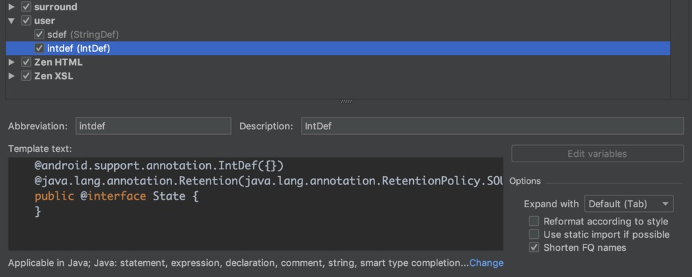

17 年毕业开始工作到现在已快两个年头，在实际项目开发的过程中，我对 Android 开发有了一些自己的思考。本着碰撞才会有火花、讨论才会进步的理念，我把对 Android 开发的一点思考分享出来，真诚的希望可以有不同的观点，在纠结反驳之中得到最优解，共同进步。
最初的时候，你是否是一个完美主义者，不容忍任何一点 warning 与叹号，if 必有 else，switch 必有 default，即使 else 和 default 中确实什么也不用处理，你也会添加一个 //do nothing 注释，表示这里的逻辑是经过充分考虑的，下次阅读程序时，告诉别人也告诉自己，这里的确什么也不用处理，可以快速跳过。
我想大多数开发者，都是经历过这种心态的，然后在繁忙的版本迭代中、在赶着回家的加班时、在愈来愈发的对自己的薪水不满时、在一次又一次看到团队中别人得过且过的代码时，渐渐的，就可能对“生活”妥协，丢掉了完美主义。
然而如果你有更高的追求，就要勇敢的战胜自己的感性。
使用 IntDef、StringDef
平时特常用的 View.setVisibility() 方法使用 IntDef 来规定参数的可选项，可以试想一下，假如没用 IntDef 会怎么样？对于初学者来说，可能要稍微阅读一下源码或查下资料才能知道 setVisibility 有哪些参数可以设置。你可能会觉得没什么差，因为你很清楚 setVisibility 方法有哪些参数可以设置。但若是程序中新增的一个方法呢？比如你新接触一个模块，某个界面有若干个跳转 Action，你得先找到定义这些 Action 的地方，而若一不小心将这些 Action 分散写在不同的地方，那对后面的维护和拓展可能就是一个灾难。
建议凡是符合语义的逻辑，都必须用 IntDef、StringDef 来约束，它比枚举节省内存，性能更优，其 RetentionPolicy.SOURCE 表示此注解只在源码中存在，编译时会剔除。你可以在 Android Studio 的 Live Templates 中添加 IntDef、StringDef 写法：

使用精准表达的变量类型
比如你需要声明一个变量来表示某个功能是否启用，譬如控制你的 App 是否展示广告，并且可以通过服务端在线下发开关来控制，如果没有接收到下发的开关，就根据地区来决定是否展示。
这种情况下你会使用什么类型的变量？
你可能会想到使用一个 int 类型变量来控制，然后需要给这个变量加上注释：
1 | // 0：展示； 1：不展示； 2：未接收到在线开关，需要根据地区决定是否展示 |
以后每当改动到这部分逻辑，都需要查看一下这个变量数值对应的含义，随着时间的推移和代码量的增多，在此逻辑之上可能堆积了很多代码，然后就会出现各种各样的问题，别人可能在不存在的逻辑分支做了一些事：
1 | if (mShouldShowAd == 0) { |
甚至可能对这个变量赋值 [0,2] 区间之外的数值！ 你可能对这个变量的意义很了解也绝不会用错，但你不能保证他人不会出现上面所说的荒唐的用法，因为这个变量类型并不能很精准的表达它的语义，也没有任何约束性。
我们可以怎样改善这种难维护、有风险的代码？
- 可以使用 IntDef 规定这个变量的取值
- 可以换成 Boolean 类型，用 null 表示未获取到在线开关，恰好的表达语义并且易读、易维护
使用尽可能少的变量
举个例子：1
2
3
4
5mDebug = BuildConfig.DEBUG;
if (mDebug) {
Log.d(TAG, "...");
}
你是否写过这样的逻辑？明明已经存在了一个可以直接使用的变量条件，你仍然要重新定义。这个例子逻辑还十分简单，此变量是 final 类型的，不会出错。而如果是非 final 类型的变量，那就是强行增加了一个赋值联动的逻辑，埋下了隐患，后续如果出了问题，白白的增加了定位问题的路径与复杂度。
实际开发中我们可能自己都意识不到使用了不必要的变量，比如我们的服务端接口一般会有多个接口环境，那你的代码可能是这样的：1
2
3
4
5
6
7
8
9
10
11
12
13
14
15
16
17
18
19
20
21
22
23
24
25
26
27
28
29
30
31
32
33
34
35
36
37//是否是测试环境
private static boolean sIsApiHostTest;
//是否是beta环境
private static boolean sIsApiHostBeta;
//正式环境host
private static String sApiHost = "http://api.com/";
//测试环境host
private static String sApiHostTest = "http://test.api.com/";
//beta环境host
private static String sApiHostBeta = "http://beta.api.com/";
/**
* 是否是测试环境
*/
public static boolean isApiTest() {
return sIsApiHostTest;
}
/**
* 是否是beta环境
*/
public static boolean isApiBeta() {
return sIsApiHostBeta;
}
/**
* 获取接口域名
*/
public static String getApiHost() {
if (isApiTest()) {
return sApiHostTest;
} else if (isApiBeta()) {
return sApiHostBeta;
} else {
return sApiHost;
}
}
这样看起来好像没什么问题，只要维护好 sIsApiHostTest、sIsApiHostBeta 这两个变量就行了。如果后面又添加了一个环境呢？又添加了三四个环境呢？是不是还要维护多个变量？这个逻辑可以通过减少变量来改善：1
2
3
4
5
6
7
8
9
10
11
12
13
14
15
16
17
18
19
20
21
22
23
24
25
26
27
28
29//当前环境host
private static String sCurApiHost;
//正式环境host
private static String sApiHost = "http://api.com/";
//测试环境host
private static String sApiHostTest = "http://test.api.com/";
//beta环境host
private static String sApiHostBeta = "http://beta.api.com/";
/**
* 是否是测试环境
*/
public static boolean isApiTest() {
return sApiHostTest.equals(sCurApiHost);
}
/**
* 是否是beta环境
*/
public static boolean isApiBeta() {
return sApiHostBeta.equals(sCurApiHost);
}
/**
* 获取接口域名
*/
public static String getApiHost() {
return sCurApiHost;
}
再加上 StringDef 就完美了：
1 | ({ApiHost.sApiHost, ApiHost.sApiHostTest, ApiHost.sApiHostBeta}) |
不知道你有没有感受到易读性、可维护性、拓展性都蹭蹭蹭的往上涨呢？
单一数据源
同时接受多个数据源数据的逻辑相比只接受一个数据源的数据需要考虑时序性等问题，要复杂很多。打个比方，可以把数据源当作你的直接上级，上级会不定时的分配任务给你做，如果你有多个上级，一个让你做任务 A，一个让你做任务 B，且 A 需要在 B 之前完成，你要怎么办？两个上级都让你做任务 A，但是只用做一次，你要怎么办？
在安卓中较为典型的场景就是同时加载网络和本地缓存数据到 UI 上，你的 UI 上展示的数据来自不同的地方，你需要考虑不同数据源之间如何协作。谷歌推出的 Jetpack 开发指南上推荐我们使用单一数据源，假如你的网络数据也需要缓存的话，那你的实现逻辑应该是这样：
- 加载网络数据，返回后插入到本地
- 统一从本地取数据展示到 UI 上
这点和上面说的“使用尽可能少的变量”有相通之处，都是尽量规避使用多个条件变量对程序产生影响的逻辑。
职责分离
强烈建议什么类里就干什么事，别把逻辑都揉到一块儿，这样随着代码量的增加，会愈发的难以维护，到最后就变成一颗存在重大隐患的地雷，看见就头疼。
举个例子，比如你要自定义一个 View，那就像系统控件一样，只负责一个控件该负责的事，处理一下渲染、展示，把手势交互通过接口开放出来，把数据的获取写在数据仓库中。这样如果数据展示出了问题，可以很快的定位到是数据获取出了问题，还是渲染展示出了问题；如果这个控件的渲染展示是经过验证的，之后就几乎不用改动此控件，至少你有机会可以将你的自定义 View 写的像系统的控件一样稳定。
这里再推荐一下谷歌的 Jetpack - MVVM 全家桶，MVC 真的是不易读、难维护、问题多、很简陋。
回归最初的完美主义
希望你我可以战胜感性，不向“生活”妥协，让优秀成为准则和习惯，回归最初的完美主义。